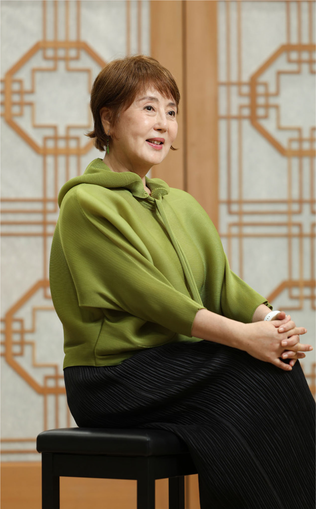

Q.
제67회 3·1문화상 예술상 수상자로 선정되셨습니다. 이번 수상이 선생님께는 어떤 의미로 다가오나요?
제가 이름이 많이 알려진 대중적인 예술가인지는 모르겠습니다. 하지만 오랫동안 무대를 지켜오면서 남들이 다 하는 것이 아니라 한국적인 연극과 음악극을 하려고 몸부림치며 살아왔습니다. 외롭고 힘든 시간도 많았고, 남들이 가지 않는 길을 가면서 상처받기도 했는데 이번 3·1문화상이 그런 제 삶을 인정하고 보상해준 것 같습니다. ‘내가 걸어온 삶이 옳았다’고 말해주는 증명서 같은 상입니다. 특히 창극과 마당놀이의 가치까지 인정받았다는 점에서 더욱 고맙고 뜻깊습니다.